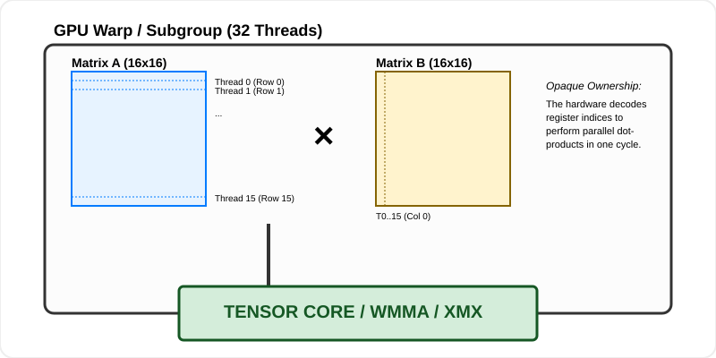

Vendor-Specific Optimizations: Squeezing the Last Drop
Generic Vulkan compute shaders are the "Great Equalizer"—they run on almost any modern GPU. But in the high-stakes world of ML inference, "running" isn’t enough. You want to dominate.
NVIDIA has Tensor Cores, AMD has AI Accelerators (WMMA), and Intel has XMX engines. These are specialized hardware blocks designed for one thing: multiplying matrices at terrifying speeds. If you ignore them, you are leaving to performance on the table.
In this chapter, we are going to learn how to write Hardware-Aware Vulkan. We will explore the architectural differences between the "Big Three" and learn how to bridge the gap between high-level library usage (ONNX Runtime) and low-level shader engineering.
The Pragmatic Path: Library-Level Hardware Acceleration
If you are using ONNX Runtime (as taught in the Desktop Applications chapter), you might wonder: "Do I need to write custom assembly to use a Tensor Core?"
The answer is No. High-level libraries are designed to detect and utilize this hardware automatically via Execution Providers (EP).
1. WebGPU / DirectML (Universal Windows/Linux)
When you use the webgpu or DirectML execution providers, the library translates your model nodes into Metacommands. These are pre-compiled, vendor-optimized GPU kernels provided by the driver.
-
How to verify: In Windows, use Task Manager or NVIDIA Control Panel. If your "Compute" or "Tensor" engine usage spikes during inference while 3D usage remains low, the library is successfully bypassing the generic graphics units.
-
Tuning: You can often force specific behaviors using environment variables. For example,
ORT_DIRECTML_DEVICE_IDcan select a specific GPU, and DirectML itself has internal flags to prioritize "Performance" vs "Power."
2. CUDA / TensorRT (NVIDIA Specific)
For the absolute highest performance on NVIDIA hardware, the TensorRT execution provider is king. It doesn’t just run the model; it compiles it for your specific GPU architecture (e.g., Ada Lovelace vs. Ampere).
-
Compilation: The first time you run a model with TensorRT, it will pause for a few minutes. It is literally testing different matrix tile sizes on your specific silicon to find the one that hits the highest throughput.
-
FP16/INT8: To use Tensor Cores via TensorRT, you must explicitly enable them in the
SessionOptions:
Ort::SessionOptions options; OrtTensorRTProviderOptions trt_options; trt_options.device_id = 0; trt_options.trt_fp16_enable = 1; // Enables Tensor Cores trt_options.trt_int8_enable = 1; // Requires calibration data options.AppendExecutionProvider_TensorRT(trt_options);
The Silicon Landscape: Matrix Math Units
To optimize for a vendor at the shader level (Path 2), you must understand their "Matrix Unit"—the hardware block that performs the fused multiply-add ( ) on small matrix tiles.
1. NVIDIA (Tensor Cores)
Since the Volta architecture, NVIDIA SMs (Streaming Multiprocessors) have contained Tensor Cores.
-
The Unit: A Tensor Core doesn’t work on individual numbers; it works on Matrix Tiles (typically 16x16).
-
The Workflow: Threads in a Warp (32 threads) work cooperatively. The matrix is not loaded by one thread; its rows are distributed across all 32 threads. The Tensor Core "reaches into" the registers of all threads in the warp simultaneously to perform the multiplication.

-
The Bottleneck: Tensor Cores are so fast that they are almost always Memory Bound. If you can’t feed them 16x16 tiles of data every few clock cycles, they sit idle. This is why Shared Memory Tiling (Chapter 05) is mandatory when using them.
2. AMD (WMMA - Wave Matrix Multiply-Accumulate)
Introduced in RDNA3 (RX 7000 series), AMD GPUs feature AI Accelerators.
-
The Unit: WMMA units are designed to saturate AMD’s wide SIMD units.
-
The Workflow: Similar to NVIDIA, but optimized for AMD’s Wavefront (32 or 64 threads). AMD’s architecture relies heavily on Infinity Cache to keep these units fed.
-
Nuance: On AMD, the hardware often supports different "Wave" sizes (Wave32 vs Wave64). A shader written for Wave32 might run at half speed on a Wave64 card if you don’t query the hardware limits correctly.
3. Intel (XMX - Xe Matrix Extensions)
Intel’s Arc GPUs (Xe-HPG) feature some of the most aggressive matrix hardware in the consumer market.
-
The Unit: Each Xe-core contains a Systolic Array.
-
Systolic Flow: Unlike a standard GPU thread that reads and writes to registers, a systolic array passes data directly from one processing element to its neighbor. Imagine a "pulse" of data flowing through a grid.
-
The Payoff: This minimizes "Register Pressure," allowing Intel GPUs to run very deep matrix calculations without stalling for memory. Intel’s units are particularly efficient at INT8 and BF16 (Brain Floating Point) precisions.
Cooperative Matrices: The Universal Fast-Path
The VK_KHR_cooperative_matrix extension is the "Standard Library" for matrix hardware. It provides types that the Vulkan compiler automatically maps to the correct hardware units (Tensor Cores, WMMA, or XMX).
The Concept: Opaque Tiling
Instead of writing nested for loops, you use the coopmat type. A coopmat is opaque—you don’t know which thread owns which pixel. The hardware decides the optimal mapping.
#extension GL_KHR_cooperative_matrix : enable
#extension GL_EXT_shader_explicit_arithmetic_types_float16 : enable
// Define a matrix configuration
// M, N, K are the tile dimensions (e.g., 16, 16, 16)
layout(constant_id = 0) const uint M = 16;
layout(constant_id = 1) const uint N = 16;
layout(constant_id = 2) const uint K = 16;
// Cooperative matrices for Subgroup scope (the 32/64 threads work together)
coopmat<float16_t, gl_ScopeSubgroup, M, K, gl_MatrixUseA> matA;
coopmat<float16_t, gl_ScopeSubgroup, K, N, gl_MatrixUseB> matB;
coopmat<float32_t, gl_ScopeSubgroup, M, N, gl_MatrixUseAccumulator> matC;
void main() {
// 1. Cooperative Load: Hardware-optimized memory fetch
// Stride is the number of elements between rows in VRAM.
// 'false' indicates the memory is not column-major.
coopMatLoad(matA, inputABuffer, indexA, strideA, false);
coopMatLoad(matB, inputBBuffer, indexB, strideB, false);
// 2. The Systolic Burst: Multiply-Add in one instruction
// This maps to 'hmma' on NVIDIA or 'v_wmma' on AMD.
matC = coopMatMulAdd(matA, matB, matC);
// 3. Store the result
coopMatStore(matC, outputBuffer, indexC, strideC, false);
}Hands-on: Querying and Using Matrix Accelerators
Cooperative matrices are "Opaque" because their internal layout is hardware-defined. To use them, you must query the specific configurations (M, N, K) your user’s GPU supports.
Phase 1: Enabling the Extension (C++)
Matrix hardware requires explicit activation during your Vulkan setup.
// 1. Instance Extensions
// Usually none needed beyond standard Vulkan 1.2+
// 2. Device Extensions
std::vector<const char*> deviceExtensions = {
VK_KHR_COOPERATIVE_MATRIX_EXTENSION_NAME,
VK_KHR_SHADER_FLOAT16_INT8_EXTENSION_NAME // Often needed for ML data types
};
// 3. Feature Activation
VkPhysicalDeviceCooperativeMatrixFeaturesKHR matrixFeatures = {
.sType = VK_STRUCTURE_TYPE_PHYSICAL_DEVICE_COOPERATIVE_MATRIX_FEATURES_KHR,
.cooperativeMatrix = VK_TRUE, // Enable the actual hardware path
.cooperativeMatrixRobustness = VK_TRUE // Recommended for safety
};
// Pass matrixFeatures to your VkDeviceCreateInfo pNext chainPhase 2: Querying Hardware Capabilities
Every GPU supports different matrix sizes. An RTX 4090 might support 16x16, while an AMD card might prefer 32x32. You must query this at runtime.
uint32_t propertyCount = 0;
vkGetPhysicalDeviceCooperativeMatrixPropertiesKHR(gpu, &propertyCount, nullptr);
std::vector<VkCooperativeMatrixPropertiesKHR> props(propertyCount);
for(auto& p : props) p.sType = VK_STRUCTURE_TYPE_COOPERATIVE_MATRIX_PROPERTIES_KHR;
vkGetPhysicalDeviceCooperativeMatrixPropertiesKHR(gpu, &propertyCount, props.data());
// Filter for the configuration you want (e.g., float16 math)
for (const auto& p : props) {
if (p.AType == VK_COMPONENT_TYPE_FLOAT16_KHR && p.scope == VK_SCOPE_SUBGROUP_KHR) {
std::cout << "Supported Tile: M=" << p.MSize << " N=" << p.NSize << " K=" << p.KSize << std::endl;
// Save these for Specialization Constants!
}
}Phase 3: The Specialization Constant Handshake
Since the shader needs to know the tile size at compile-time for register allocation, we use Specialization Constants to pass the hardware values we just queried.
// Map hardware M, N, K to specialization constants
std::array<VkSpecializationMapEntry, 3> specMap;
specMap[0] = { .constantID = 0, .offset = 0, .size = sizeof(uint32_t) }; // M
specMap[1] = { .constantID = 1, .offset = 4, .size = sizeof(uint32_t) }; // N
specMap[2] = { .constantID = 2, .offset = 8, .size = sizeof(uint32_t) }; // K
uint32_t specData[] = { supportedM, supportedN, supportedK };
VkSpecializationInfo specInfo = {
.mapEntryCount = 3, .pMapEntries = specMap.data(),
.dataSize = sizeof(specData), .pData = specData
};
// Pass specInfo to your VkComputePipelineCreateInfoPhase 4: Dispatch Orchestration
When using cooperative matrices, your dispatches must be aligned to the Subgroup.
-
Workgroup Size: Set your
local_size_xto thesubgroupSize(e.g., 32). -
Grid Dimensions: Divide your total matrix size by the hardware Tile Size (M, N).
-
dispatchX = totalN / supportedN; -
dispatchY = totalM / supportedM;
-
Mastering Registers: The Hidden Bottleneck
In Path 2 (Custom Shaders), your biggest enemy isn’t the code logic—it is Register Pressure.
The Register File
Every GPU Compute Unit has a fixed pool of fast memory called the Register File.
-
If your shader uses 32 registers, the GPU can launch 2,048 threads simultaneously (High Occupancy).
-
If your shader uses 128 registers (e.g., because you have a large
coopmator a big array), the GPU can only launch 512 threads (Low Occupancy).
Why Occupancy Matters
GPUs use threads to hide Memory Latency. When one thread is waiting for data from VRAM, the GPU "swaps" it for another thread that is ready to compute.
-
High Occupancy: The GPU always has "fresh" threads to run. The hardware stays busy.
-
Low Occupancy: All 512 threads are waiting for VRAM. The GPU compute units sit idle. You are "Register Bound."
Professional Profiling: The "Microscope"
To fix this, you must use vendor-specific profilers:
-
NVIDIA (Nsight Compute): Look at the "Register Pressure" metric. If it says "Spilling to Local Memory," your registers overflowed into slow VRAM. You must shrink your
coopmattiles or simplify your loops. -
AMD (Radeon GPU Profiler): Look at the "Wavefront Occupancy" graph. If it’s below 4 wavefronts per SIMD, you aren’t hiding latency effectively.
-
Intel (Graphics Performance Analyzers): Check the "Stall Reason." If it’s "Register Dependency," your math is faster than your register file can deliver data.
Subgroup Shuffles: Communication Without VRAM
Even if you aren’t doing matrix math, you can still optimize for specific vendors by using Subgroup Operations. These allow threads within a subgroup to share data without touching Shared Memory or L1 Cache.
The "Shuffle" Pattern
Imagine you are calculating a Softmax. You need the maximum value of a row to ensure numerical stability.
-
Naive Way: Every thread writes to Shared Memory, calls
barrier(), then one thread reads them all. (Latency: 40-100 cycles). -
Hardware Way: Use
subgroupMax().
#extension GL_KHR_shader_subgroup_arithmetic : enable
void main() {
float myVal = ...;
// The GPU hardware performs a reduction across all 32 threads
// in the register file.
float rowMax = subgroupMax(myVal);
// rowMax is now correct for ALL threads in the subgroup.
}This reduces the latency from 100 cycles to 1 cycle.
Vendor Nuance: Wavefront Sizes
One of the biggest hurdles in vendor-specific code is the Subgroup Size.
-
NVIDIA: Always 32 (Warp).
-
Intel: Usually 8, 16, or 32 depending on the shader complexity.
-
AMD: Can be 32 or 64 (Wave32 vs Wave64) depending on the hardware generation.
To write robust vendor code, you must never hard-code 32. Always query gl_SubgroupSize or use the subgroupSize specialization constant provided by Vulkan. If you assume 32 on a Wave64 AMD card, you will only process half the data, leaving the other half as uninitialized garbage.
The Multi-Vendor Dispatcher Pattern
A professional inference engine shouldn’t have three different apps. It should have one app that detects the hardware at runtime and "swaps" the implementation.
class InferencePath {
public:
virtual void dispatch(vk::CommandBuffer cmd) = 0;
};
// Implementation for NVIDIA Tensor Cores
class NvidiaPath : public InferencePath { ... };
// Implementation for AMD WMMA
class AmdPath : public InferencePath { ... };
// Implementation for Intel XMX
class IntelPath : public InferencePath { ... };
// Generic path using standard subgroups
class GenericPath : public InferencePath { ... };
// Helper to check for extension support
bool supportsCoopMat(vk::PhysicalDevice gpu) {
auto extensions = gpu.enumerateDeviceExtensionProperties();
for (const auto& ext : extensions) {
if (std::string(ext.extensionName) == VK_KHR_COOPERATIVE_MATRIX_EXTENSION_NAME) return true;
}
return false;
}
std::unique_ptr<InferencePath> selectOptimalPath(vk::PhysicalDevice gpu) {
auto props = gpu.getProperties();
// Check Vendor ID
if (props.vendorID == 0x10DE && supportsCoopMat(gpu)) {
return std::make_unique<NvidiaPath>();
}
if (props.vendorID == 0x1002 && supportsCoopMat(gpu)) {
return std::make_unique<AmdPath>();
}
if (props.vendorID == 0x8086 && supportsCoopMat(gpu)) {
return std::make_unique<IntelPath>();
}
return std::make_unique<GenericPath>();
}Vendor-Specific Performance Profiles
When choosing a precision, you must understand the throughput ratios of your target hardware. Modern GPUs are heavily biased toward integer math. The numbers below represent peak theoretical throughput for standard matrix multiplication (GEMM) operations.
| Precision | NVIDIA (RTX 4090) | AMD (RX 7900 XTX) | Intel (Arc A770) |
|---|---|---|---|
FP32 |
82.6 TFLOPS |
61.3 TFLOPS |
17.2 TFLOPS |
FP16 |
330.3 TFLOPS (TC) |
122.6 TFLOPS (WMMA) |
68.8 TFLOPS (XMX) |
INT8 |
660.6 TOPS (TC) |
245.2 TOPS (WMMA) |
137.6 TOPS (XMX) |
Sources:
-
NVIDIA: RTX 4090 Product Specifications (Tensor Core throughputs derived from peak compute and sparsity ratios).
-
AMD: AMD Radeon RX 7900 XTX Specs (AI Accelerator performance).
-
Intel: Intel Arc A770 Specifications (XMX throughput).
The Insight: If you move from FP32 to INT8, you aren’t just saving memory; you are accessing a hardware path that is 8x to 10x faster across all major vendors.
Memory Alignment: The Silent Performance Killer
Matrix hardware is extremely picky about memory layout. If you ignore this, the driver will silently fall back to a "Slow Path," and your speedup will disappear.
-
Buffer Alignment: NVIDIA Tensor Cores require that your buffer start address and every row "Stride" be aligned to 128 bits (16 bytes).
-
Tiling Strategy: Always try to keep your matrix dimensions multiples of 16. If your layer is 100x100, "Pad" it to 112x112 with zeros. The hardware math is so fast that calculating 12 extra zeros is faster than running an unaligned 100x100 kernel.
Summary: The Hardware Mastery Checklist
-
Library Path: Configure
SessionOptionsto enabletrt_fp16_enableor thewebgpuprovider. -
Query: Use
vkGetPhysicalDeviceProperties2to check forVkPhysicalDeviceCooperativeMatrixPropertiesKHR. -
Tiling: Align your ML layers to 16x16 or 32x32 blocks to match hardware matrix units.
-
Cooperative Matrices: Replace inner loops with
coopMatMulAddfor a boost. -
Subgroups: Use
subgroupMax,subgroupSum, andsubgroupShufflefor all inter-thread communication. -
Alignment: Ensure all buffer strides are 16-byte aligned to enable Coalesced Memory Access.
In the next chapter, we will look at the final hardware constraint: Memory Management. We’ll learn how to fit massive 10GB models into 4GB of GPU memory using professional pooling and streaming techniques.